03.31.2011 21:26
simplesegy now in github
https://github.com/schwehr/simplesegy
See OceanBytes Sub-Bottom Profiling using an AUV and AUV configured with both sub-bottom profiler and swath bathymetry. The AUV is getting longer and longer!
03.30.2011 08:25
Deepwater Horizon Joint Investigation website
Deepwater Horizon Joint Investigation - The Official Site of the Joint Investigation Team
The purpose of this joint investigation is to develop conclusions and recommendations as they relate to the Deepwater Horizon MODU explosion and loss of life on April 20, 2010. The facts collected at this hearing, along with the lead investigators' conclusions and recommendations will be forwarded to Coast Guard Headquarters and BOEM for approval. Once approved, the final investigative report will be made available to the public and the media. No analysis or conclusions will be presented during the hearing. The Bureau of Ocean Energy Management, Regulation and Enforcement (BOEMRE)/U.S. Coast Guard (USCG) Joint Investigation Team, which is examining the Deepwater Horizon explosion and resulting oil spill, announced that it will hold a seventh session of public hearings the week of April 4, 2011. The hearings, which will focus specifically on the forensic examination of the Deepwater Horizon blowout preventer (BOP), are scheduled to take place at the Holiday Inn Metairie, New Orleans Airport, 2261 North Causeway Blvd., Metairie, La. Additionally, the JIT has been granted an extension of the deadline for its final report. This approval was provided by USCG and BOEMRE. The final report is due no later than July 27, 2011.
03.29.2011 13:09
USCG Federal 100 award - USCG SPEAR SOA
Coast Guard makes waves with SOA - Federal 100 award winner Capt. Mike Ryan is using SOA technology to forge powerful links
Capt. Mike Ryan took command of the Coast Guard's Operations Systems Center in 2008 as the service was seeking to modernize its IT infrastructure. Under his leadership, the center developed the Semper Paratus Enterprise Architecture Realization (SPEAR) service-oriented architecture, which will save the Coast Guard millions of dollars. It has already improved data sharing and enhanced the service's response to incidents, such as the Deepwater Horizon oil spill.I still really don't understand what exactly SOA is supposed to be. And I've never heard of SPEAR before. Here is the only think I could quickly find...
FBO2 - SPEAR Implementation Guild pdf, which talks about ESB.
03.29.2011 10:38
Going with google test
I liked that there were a set of samples that got me to a working test, the building of gtest was clean, cmake & xcode & msvc support,and I found a nice Quick Reference guide. Here is what I did to get going with sample 1. First the GNU Makefile that will put it together
sample1_unittest: sample1_unittest.cc sample1.o g++-4 -g -Wall -O3 -L/sw/lib -I/sw/include -o $@ $^ -lgtest -lgtest_main sample1.o: sample1.cc g++-4 -g -Wall -O3 -I/sw/include -c $<Then grab the source files:
wget http://googletest.googlecode.com/svn/trunk/samples/sample1.cc wget http://googletest.googlecode.com/svn/trunk/samples/sample1.h wget http://googletest.googlecode.com/svn/trunk/samples/sample1_unittest.ccThere currently are some weird buried malloc / free issues in the test suit, but when I look past those, I see:
make && ./sample1_unittest Running main() from gtest_main.cc [==========] Running 6 tests from 2 test cases. [----------] Global test environment set-up. [----------] 3 tests from FactorialTest [ RUN ] FactorialTest.Negative [ OK ] FactorialTest.Negative (0 ms) [ RUN ] FactorialTest.Zero [ OK ] FactorialTest.Zero (0 ms) [ RUN ] FactorialTest.Positive [ OK ] FactorialTest.Positive (0 ms) [----------] 3 tests from FactorialTest (0 ms total) [----------] 3 tests from IsPrimeTest [ RUN ] IsPrimeTest.Negative [ OK ] IsPrimeTest.Negative (0 ms) [ RUN ] IsPrimeTest.Trivial [ OK ] IsPrimeTest.Trivial (0 ms) [ RUN ] IsPrimeTest.Positive [ OK ] IsPrimeTest.Positive (0 ms) [----------] 3 tests from IsPrimeTest (0 ms total) [----------] Global test environment tear-down [==========] 6 tests from 2 test cases ran. (2 ms total) [ PASSED ] 6 tests.
03.28.2011 14:13
Margaret Boettcher on WOKQ
UNH Professor Margaret Boettcher Podcast on WOQK
03.27.2011 23:06
unittesting c++ in 2011 - part 1
Comments: C++ testing 2011
I have talked about unittesting for C++ before and got some feedback, but I never picked a frame work for my code. I've reached the point where I really have to make a decision and get going. I'm going to do some quick analysis and see if I can take the plunge. My experience with python is pretty good, but doesn't make me an expert. Python's unittest makes it pretty safe to pick that and just go forward. There are other good choices for python, but I'm not worried. For C++, it's overwhelming.
First a little discussion about requirements. First, it's got to be open source. I'm not investing my time on something that I can't use whenever I need it. That also leeds into it having to support C (which should be a no-brainer for most) and, if possible, ObjC to support the Mac environment. It would be nice it it played well with continuous integrations systems (buildbot, hudson, etc) so that some day, I could use one of those. Any it can't want to fight against the basic build systems. And, it needs to be easily packaged. If I can't get it into fink and ubuntu, then it isn't going to be around and the code will not get tested. Do I care about Windows? Not really, but it would be nice if what ever I picked supported that.
Next, where can I find out about these systems? C++ having two plus characters in its name makes searching annoying. People often write cpp (which I still think of as output from the C pre-processor), cxx, cc, and C. R and C have the same problem. Here are some of the places I looked:
-
http://packages.ubuntu.com/ (and
apt-cache search test) - http://pdb.finkproject.org/pdb/browse.php?nolist=on fink packages
- Wikipedia C framework list
- Wikipedia C++ framework list
- Wikipedia C++ framework list
- Freshmeat Test with C++ search
Now the BFL (big freaking list). I've included some straight C frameforks. Empty fields mean I didn't check the value or it wasn't immediately obvious.
| Name | License | Ubuntu | Fink | C++ | ObjC | Last Update | Notes |
|---|---|---|---|---|---|---|---|
| CPUnit | BSD | n | n | y | ? | ||
| googletest | BSD | libgtest-dev | y | ? | |||
| CU | LGPLv3 | 2010-01 | |||||
| CuTest | xlib | n | n | ||||
| ObjcUnit | y | 2002 | |||||
| simplectest | LGPLv2.1 | y | 2005 | ||||
| TestSoon | zlib | n | n | y | 2009 | ||
| TUT | BSD | libtut-dev | y | 2009 | |||
| unit-- | GPL | y | 2006 | ||||
| unity | MIT | n | 2010-12 | ||||
| CxxTest | LGPL | y | 2009 | ||||
| CppTest | LGPL | libcpptest-dev | y | 2010-03 | |||
| CppUnit Lite | sketchy | ||||||
| UnitTest++ | LGPL | libunittest++-dev | y | 2010-03 | |||
| CeeFIT | GPL | y | 2006 | ||||
| CppUnit | LGPLv2 | y | y | 2008 | |||
| CppUnit2 | LGPLv3 | y | 2009 | Dead? | |||
| Aeryn | LGPL | y | 2009 | ||||
| Fructose | LGPL | y | 2011 | ||||
| Catch and 2 | Boost | y | y | 2011 | |||
| OCUnit at Apple | FreeBSD | y | In XCode | ||||
| CppUTest | BSD | y | 2010-11 | ||||
| Boost Test and 2 | Boost | y | y | n | 2007 | ||
| libautounit2 | libautounit2 | ||||||
| Cutter | LGPLv3 | cutter-testing-framework-bin | y | 2011 | Interesting | ||
| cunit | LGPL | libcunit1 | n | 2010-10 | |||
| Diagnostics | LGPL | libdiagnostics0 | 2011 | ACE framework | |||
| SubUnit | Apache | libsubunit0 | 2010 | ||||
| qmtest | GPLv2 | qmtest | |||||
| check | LGPL | check | y | n | 2009 | ||
| TestEnvironmentToolkit | Artistic | n | n | y | 2010 | Ick. OpenGroup email ware | |
| Dave's Unit Test (DUT) | GPLv2 | n | n | 2008 | |||
| Haste | n | 2005 | No longer maintained. Not C? | ||||
| Sys Testing in Ruby (Systir) | Replaces Haste. Testing outside of C/C++ | ||||||
| staf | Ecplise | n | n | 2010-12 | Outside engine. Python based | ||
| cxxtester | ? | 2003 | |||||
| crpcut | BSD | n | y | 2011 | "Crap Cut" | ||
| OakUT and 2 | BSD | 2005 | |||||
| Testicle | BSD | 2011 | Worst named package | ||||
| Cutee | GPL | y | 2003 ? | ||||
| cut | zlib | y | y | 2008 | |||
| yaktest | LGPL | n | n | y | 2003 | ||
| atf | BSD | n | n | y | 2010-10 | Moving to Kyua | |
| Kyua | BSD | n | n | 2011 | Formerly atf | ||
| xtests | BSD | n | n | y | 2010-08 | ||
| austria | LGPL | n | n | y | 2004 |
I am sure to be missing many many open source testing packages. Other very helpful tools:
| Name | License | Ubuntu | Fink | C++ | ObjC | Last Update | What is it? |
|---|---|---|---|---|---|---|---|
| duma | GPL | duma | y | buffer overflow | |||
| valgrind | GPLv2 | valgrind | y | c/c++ memory issue checks | |||
| flume | log files | ||||||
| slogcxx | LGPL | n | n | y | n | 2010-09 | Kurt's simple C++ logging util |
| mockpp | LGPL | n | y | 2010-01 | Mock Objects | ||
| Google Mock | BSD | ||||||
| CovTool | GPL | n | 2009 | Code coverage | |||
| lcov | lcov | y | Code coverage - Part of the LTP | ||||
| RATS | GPL | rats | y | Rought Auditing Tool for Security | |||
| trac | trac | y | 2011 | Issue Tracking / VC history etc | |||
| Mantis | GPL | mantis | n | ||||
| flawfinder | GPL | flawfinder | y | y | 2007 | Code inspection | |
| cppcheck | GPLv3 | cppcheck | n | y | 2011 | Code inspection | |
| yasca | BSD | uses RATS | |||||
| sonar plugins | LGPL | 2011 | Code quality tool | ||||
| Metric++ | LGPL | Sonar plugin | |||||
| clint | GPL | ||||||
| lclint | splint / C source checker | ||||||
| avro | Apache | data serialization/ log files | |||||
| CruiseControl | Continuous integration - Java Focus | ||||||
| BuildBot | y | Continuous integration | |||||
| Hudson | y | Continuous integration | |||||
| trac bitten | CI for Trac | ||||||
| DejaGNU | GNU | dejagnu | y | Testing framework. TCL expect - Yuck! | |||
| Bugs Everywhere | Distributed bug tracking | ||||||
| Fossil | SCM, Wiki, Bugtracking distributed and in one program |
I could probably spend forever on research, but I'm going to see if I can make a decision quickly. I want something that has a chance of being around for a while. But boost is kind of a heave weight requirement. But first, I wanted to take a quick peak at a system that does testing. Turns out, that gpsd is doing a diff of decoding results with a text file, so it's not the in language unittest that I was going for. But it does show how effective that can be and points to using the python interface in libais for unit testing. And I see that there is setup info for valgrind, which is a super valuable tool and free unlike the very expensive Purify. Plus purify doesn't work on the Mac.
BoostI gave a look at the Boost testing environment and used Open source C/C++ unit testing tools, Part 1: Get to know the Boost unit test framework from IBM. It definitely works, but with optimization turned on, it's really really slow to compile. I used boost 1.41 from fink. If you are already using Boost, this is likely a great choice.
CppUnitOpen source C/C++ unit testing tools, Part 2: Get to know CppUnit from IBM. I installed cppunit 1.10.2 from fink. CppUnit compiles test orders of magnitude fasters. It seems pretty nice and it isn't such a monster as bringing it Boost.
CppTestOpen source C/C++ unit testing tools, Part 3: Get to know CppTest from IBM seemed okay until I realized that it doesn't actually give you working samples. I installed CppTest 1.1.1 on Ubuntu 10.10. Then I checked http://cpptest.sourceforge.net/tutorial.html and there wasn't a working example either. There is an example in git, mytest.cpp, that I assume works, but if there isn't a good tutorial, I am not sure it's worth the time.
03.26.2011 12:15
matlab publish command
This is a great way to aim for Reproducable Research where your end document and your code live together, which is not really that different from Knuth's Literate Programming. Matlab done this way would be flagged as [CR] (having Conditional Reproducibility) by Claerbout's tagging rr scheme. For Students: If you are turning in homework that is not reproducable, you might be loosing points or have a hard time arguing a regrade.
This publish language is basically a lightwight markup language.
This is just a template of things to try. I will not attempt to document what they do here beyond giving a link to a pdf and html version of the publish. Note: Word Doc exporting does not work on non-Windows computers.
myscript.html
myscript.pdf
%% DOCUMENT TITLE
% INTRODUCTORY TEXT
%%
%% SECTION TITLE
% DESCRIPTIVE TEXT
% create a report like this:
% publish('myscript.m', 'html')
%%
% *BOLD TEXT*
%%
%
% PREFORMATTED
% TEXT
%
% That was with two spaces after the percent (%)
%%
%
% An image:
%
% <<FILENAME.PNG>>
%
%%
%
% * ITEM1
% * ITEM2
%
%%
%
% # ITEM1
%
% <html>
% <table border=1><tr><td>one</td><td>two</td></tr></table>
% </html>
%
% # ITEM2
%
%%
%
% Latex table
%
% <latex>
% \begin{tabular}{|c|c|} \hline
% $n$ & $n!$ \\ \hline
% 1 & 1 \\
% 2 & 2 \\
% 3 & 6 \\ \hline
% \end{tabular}
% </latex>
%
% End of latex table
%%
%
% $$e^{\pi i} + 1 = 0$$
%
% snapnow;
%% Trying stuff on my own
% *In star* and _under bars_ and |vertical bars|
%% display for output
%
% Perhaps what I really want is a notebook that lets me include output from
% matlab commands. But notebook is only available on windows
% If you put a blank line, it goes back to doing regular matlab comments
% If I want to put text into the output stream, display works, but the
% display is in the resulting code
display('hello world')
display('hello world with ;');
%% <http://www.mathworks.com/help/techdoc/ref/sprintf.html sprintf> can help
val1 = 0.123456789; % ; suppresses putting the result value into the publish output
val2 = 3.14 % This will be in the publish
display(sprintf('Values: %0.3f %d %d',val1,val2, 3))
sprintf('Values: %0.3f %d %d',val1,val2, 3)
%% References
%
% This has a table of markups at the very bottom of the page. Put links in angle brackets
% <http://www.mathworks.com/help/techdoc/matlab_env/f6-30186.html Marking Up MATLAB Comments for Publishing>
I put in a request to the Mathworks to improve the markup to really
allow this publish mode to really take off. If you are a windows
user, you can use the notebook functionality in Microsoft Word,
but I really don't like that it takes you far away from your
programming environment and without Mac and Linux support, I'm not
going to use notebook.
I created a little sample using the org-mode markup for the table and the python string .format (PEP 3101) template variable access showing what it might be like to have this markup.
%% Section 4 report
% The ray tracing for the layers can be summarized by the following
% table
%
% | Layer | Velocity (km/s) | Thickness (m) | Angle (deg) | Dist in Layer | Time in Layer (s) |
% |-------+-----------------+---------------+---------------+---------------+-------------------|
% | 1 | {v1} | {d1} | {angle_1_deg} | {s1} | {t1} |
% | 2 | {v2} | {d2} | {angle_2_deg} | {s2} | {t2} |
% | 3 | {v3} | {d3} | {angle_3_deg} | {s3} | {t3} |
%
% The ray will travel for {twtt} seconds before returning to the
% surface at a distance of {x} from the source.
%
There are many many Markup
Languages and Template
engines out there, so hopefully Mathworks will look around and try
to do some smart adoption.
03.26.2011 10:15
U.S. Marine Cadastre
A cadastre (also spelt cadaster), using a cadastral survey or cadastral map, is a comprehensive register of the metes-and-bounds real property of a country. A cadastre commonly includes details of the ownership, the tenure, the precise location (some include GPS coordinates), the dimensions (and area), the cultivations if rural, and the value of individual parcels of land. Cadastres are used by many nations around the world, some in conjunction with other records, such as a title register.I gave a quick peak to see what it might be capabile of and to see if there is any data that I didn't know about. I didn't find anything new. I was also trying to figure out if this was based on the ocean use workshop that I participated in during January 2010 (post title: "White board and tablet spatial data entry"). I don't think they are related based on the data that I saw. Example Map
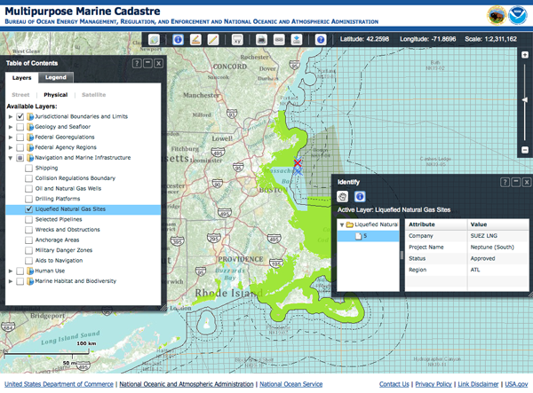
It's great that the data is all available. Bummer that the metadata is just the ASCII form.
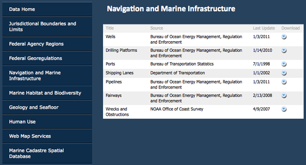
The web site says this is Version 2.0:
Functionality: - Completely redesigned using ESRI ArcServer and the Flex API - Uses dynamic as well as tiled-and-cached Web services for optimal performance - Table of contents can collapse and expand - Has dockable tools - Coordinate tool now allows the entry of four latitude and longitude coordinates to create an "area of interest" polygon - Measure tool now includes calculations in square kilometers, nautical miles, and statute miles and can measure hand-drawn lines and polygons - Data fact sheets are available for each data set, offering an easy- to-understand version of the metadata New Data: - Habitat and biodiversity layers (NOAA Fisheries critical habitat, essential fish habitat, habitat areas of particular concern, etc.) - Federal agency regions, planning areas, and districts - Regional ocean council boundaries - Large marine eco-regions - National 30-meter depth contourDo these folks know about ERMA, GeoPlatform, and this:
NOAA National Marine Protected Areas Center California Ocean Uses Atlas?
The actual map:
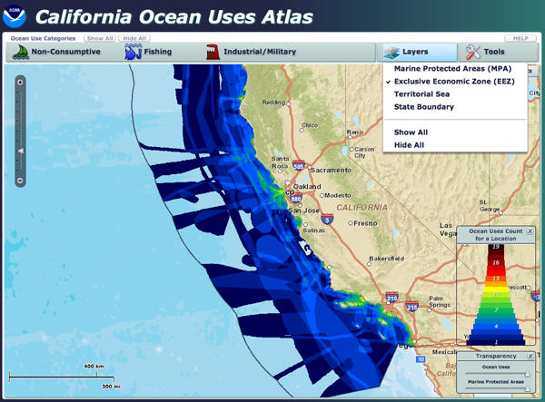
Wow! You can snag a zip of the entire geodatabase:
http://www.mpa.gov/helpful_resources/CA_ocean_uses_atlas_March2010.zip. However, it's a serious bummer that it is in an ArcGIS 9.3 proprietary geodatabase.
ls -l a0000002f.* -rw-r--r-- 1 schwehr staff 4424 Dec 24 2009 a0000002f.freelist -rw-r--r-- 1 schwehr staff 1028 Dec 22 2009 a0000002f.gdbindexes -rw-r--r-- 1 schwehr staff 214926 Dec 24 2009 a0000002f.gdbtable -rw-r--r-- 1 schwehr staff 5152 Dec 24 2009 a0000002f.gdbtablx -rw-r--r-- 1 schwehr staff 4118 Dec 22 2009 a0000002f.spx file a0000002f.* a0000002f.freelist: data a0000002f.gdbindexes: data a0000002f.gdbtable: VMS Alpha executable a0000002f.gdbtablx: VMS Alpha executable a0000002f.spx: data
03.24.2011 14:41
Nancy Kinner talk on DWH
CEPS Alumni Society Seminar Series
Tuesday, March 29, 2011
4:40 p.m.
Kingsbury Hall N101
Deepwater Horizon Oil Spill Response
Nancy Kinner, Ph.D.
Professor, Civil and Environamental Engineering University of New Hampshire
* Oil Drilling in the U.S.
* Deepwater Horizon (DWH) Drill Rig
* Oil Spill Basics
* DWH Spill Response
* Risk Communication
* Future Offshore Drilling and Spill Response
Nancy Kinner is a professor of civil and environmental engineering at
UNH. She has been co-director of the Coastal Response Research Center,
a partnership between UNH and the National Oceanic and Atmospheric
Administration (NOAA), since 2004. The center (www.crrc.unh.edu)
brings together the resources of a research-oriented university and
the field expertise of NOAA's Office of Response and Restoration to
conduct and oversee basic and applied research, conduct outreach, and
encourage strategic partnerships in spill response, assessment and
restoration.
Kinner's research explores the role of bacteria and protists in the
biodegradation of petroleum compounds and chlorinated solvents. She
teaches courses on environmental microbiology, marine pollution and
control, the fundamentals of environmental engineering, and
environmental sampling and analysis.
Kinner received an A.B. from Cornell University in biology (ecology
and systematics) in 1976 and an M.S. and Ph.D. in civil engineering
from the University of New Hampshire, where she joined the faculty in
1983. She has conducted funded research projects for agencies and
research organizations including USEPA, NSF, AWWARF, CICEET and the NH
Department of Environmental Services.
All are invited to attend! Refreshments will be served!
03.24.2011 12:42
Kinect and Gigapan
03.23.2011 11:55
MarineMap.org
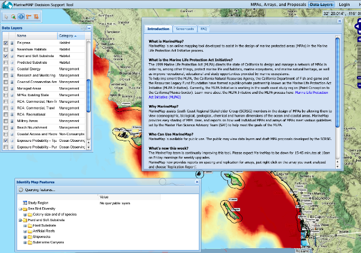
03.23.2011 09:00
Michele Jacobi on Marine Debris
03.22.2011 14:03
ERMA in the USCG ISPR
USCG Final Action Memorandum - Incident Specific Preparedness Review (ISPR) Deepwater Horizon Oil Spill (PDF, 167 Pages).
Without the FOIA (by ???), I don't know if I would have ever have seen this document. The document is huge, so I've only been able to look at a little bit of it, but here is a section about ERMA on pages 53-54:
Because of the pressure to provide information in real-time, several versions of a COP were developed independently at each ICP. In addition, private sector responders (e.g., BP, O'Brien's Response Management, and so forth) had their own COPs to track their internal resources. For more than a month, there was no single COP available. As a result, various agency leads for the COP worked together to create one COP for the entire Deepwater Horizon incident. The COP platform selected was NOAA's ERMA, also known by its public Web site, Geoplatform.gov. Other products were considered (e.g., HSIN's Integrated Common Analytical Viewer [iCAV], the Coast Guard's Enterprise GIS, National Geospatial-Intelligence Agency's [NGA's] Google Earth) prior to the selection of ERMA as the COP. These platforms were not selected because of their inability to share information with the public, primarily due to individual agency firewalls. The NOAA ERMA application utilized user authentication to protect datasets deemed sensitive, while the GeoPlatform.gov site was a fully open public Web site. ERMA allowed the rapid dissemination of new data to the public, which helped improve the transparency of the response organization. Once ERMA came online, the Unified Area Command (UAC) began to use it as a part of their daily briefings. It could show the current location of response assets and assist the ICs in making decisions on moving resources. The response organization also was able to use it to show elected officials where critical resources were deployed. The inclusion of NGA provided high-resolution imagery (unclassified), and enhanced tactical decisionmaking of critical resource movements on a real-time basis. Additionally, when ERMA was posted to a .gov Web site it became the go-to location for the general public to get information about the Deepwater Horizon incident (over two million hits in the first 2 days). ERMA was a breakthrough in how the entire response was coordinated and communicated. The incompatibility of proprietary databases and software used by the private sector appeared to be a hindrance to developing a universal COP for the response organization. Integrating data from multiple, restricted sources slowed the development of a complete and an accurate COP. Knowledge management includes tracking resources, maintaining a real-time COP, and responding to requests for information (RFIs) using near real-time reports created from authoritative repositories that contain the actual data entered about the plans, activities, and outcomes by field level response organizations. On May 23, 2010, the National Incident Commander, NIC organization, UAC, and local ICPs started using the HSIN NIC portal for posting briefings, agendas, situation updates, operational guides/Incident Action Plans, and logs. Anyone with authorization could log into HSIN and review the data. HSIN also contained an archival and organizational capability that worked well for the response organizations. Further, HSIN support teams were deployed to train and support on-scene personnel. Minimal training was required for new users to effectively navigate the HSIN NIC portal. Initially, there was a competing question about whether the NIC organization should use WebEOC rather than HSIN, but the NIC organization found that HSIN worked best for their needs. Although WebEOC was good for chats between counties and States, HSIN gave the NIC/UAC a broad capability of information management, archival information, and knowledge portals.But I found no references to AIS, LRIT, Good.com, Find Me Spot, 3G, or Port Vision (but I see a Port Vision sticker on a screen).
There are also other documents starting to emerge. I just found this one:
A Perspective from Within Deepwater Horizon's Unified Command Post Houma by Charles Epperson (16 page PDF). He also talks about what happened at the SONS dill.
An even more challenging dynamic of this response was the pressing Requests for Information (RFI) that inundated command posts, staging areas, and command and control vessels. Although this response made great strides to utilize a significant number of emerging technologies to provide situational awareness, it was never sufficient to feed the information "beast." The use of tools like the Homeland Security Information System's (HSIN) Jabber Chat, WebEOC, and Automatic Identification System (AIS) provided advancements in situational awareness, but those capabilities were rarely utilized in conjunction to develop a common operating picture that connected all levels of the organization. It is difficult to convey how time consuming RFIs and data requests can be on the operations staff struggling to support responders. It was common place to receive RFIs for the same data from different levels of the organization. It was also routine for all levels of organization to circumvent procedures and protocols set for reporting requirements in order to meet some emerging need for information.
03.22.2011 13:47
McNutt talk on Deepwater Horizon
Here is the short version:
And the full hour and 6 minute version:
03.22.2011 10:53
Getting work done - TED Talk
... And what you find is that, especially with creative people -- designers, programmers, writers, engineers, thinkers -- that people really need long stretches of uninterrupted time to get something done. You cannot ask somebody to be creative in 15 minutes and really think about a problem. You might have a quick idea, but to be in deep thought about a problem and really consider a problem carefully, you need long stretches of uninterrupted time. And even though the work day is typically eight hours, how many people here have ever had eight hours to themselves at the office? How about seven hours? Six? Five? Four? When's the last time you had three hours to yourself at the office? Two hours? One, maybe. Very, very few people actually have long stretches of uninterrupted time at an office. And this is why people chose to do work at home, or they might go to the office, but they might go to the office really early in the day, or late at night when no one's around, or they stick around after everyone's left, or they go in on the weekends, or they get work done on the plane, or they get work done in the car or in the train because there are no distractions. ...
03.17.2011 18:07
Business cards and QR codes
Triggered by... Slashdot's Is the Business Card Dead?
What are QR codes? From 2008... and he mentions business cards. I've yet to see a QR code on a business card, but I don't get that many.
03.17.2011 14:46
Motorola Xoom

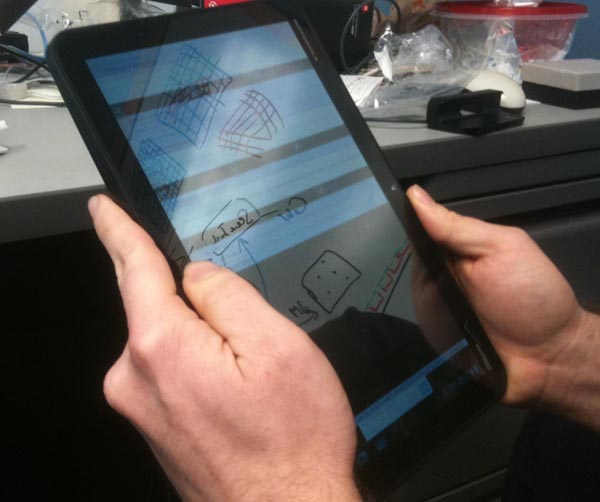
We gave Google Earth a try and while it is pretty snappy, we were unable to figure out, in the few minutes we gave it, how to load a KML file from a URL. I would have loved to have seen the Boston TSS whale status pop right in there, but no luck.
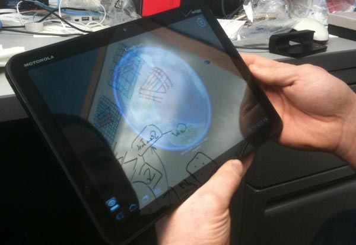
03.17.2011 14:34
GeoPapers
Trey recommended searching for "olympus". The KML on the front page works, but when I tried the kml of the search results I got a Django error. Neat to know that they are using Django! Bummer that the app needs a little TLC.
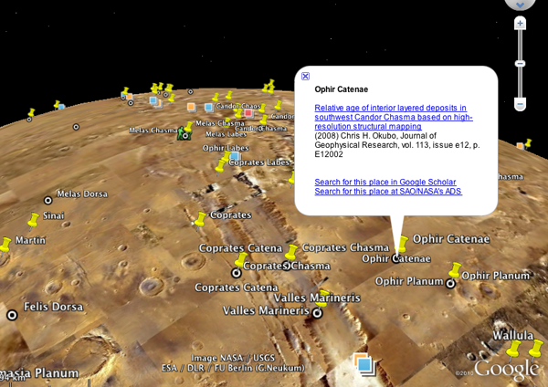
Trackback: Slashgeo: Friday Geonews: Maestro 3.0, SpacialDB, GovMaps.org, GeoPapers, Nuclear Plume Forecast, and more
03.13.2011 18:04
Citations
I had not heard of Citation Style Language (CSL) before. While it was created by Bruce D'Arcus, an associate professor of Geography, I don't see a mention of capturing the spatial or temporal component of the contents.
Update 2011-Mar-17: Also check out Sean Gillies' post: Beyond the PDF and Scholarly HTML
03.10.2011 12:50
NMEA AIS Frame Summary Report
$ARFSR,b20036699983,20100828001600,X,0,0,,,,,*5B,b20036699983,1282954560 $ARFSR,b20036699983,20100828001600,Y,0,0,,,,,*5A,b20036699983,1282954560Turns out that this is a report of the number of slots used and reserved during the last frame. I was hoping it would be a station location, but no such luck. I grabbed a bunch to use in creating a parser.
$ARFSR,r07SFTP1,20100828000002,B,0021,0,0031,,,-120,*6F,r07SFTP1,1282953602 $ARFSR,r11CCHB1,20100828000003,A,0013,0,0028,,,-128,*70,r11CCHB1,1282953603 $ARFSR,r11CCHB1,20100828000003,B,0016,0,0028,,,-129,*77,r11CCHB1,1282953603 $ARFSR,b003669974,20100828000004,X,121,0,,,,,*59,b003669974,1282953604 $ARFSR,b003669974,20100828000004,Y,99,0,,,,,*6A,b003669974,1282953604 $ARFSR,b003669975,20100828000004,X,129,0,,,,,*50,b003669975,1282953604 $ARFSR,r08SFRE1,20100828000027,A,0085,0,0069,,,-122,*76,r08SFRE1,1282953627 $ARFSR,r08SFRE1,20100828000027,B,0083,0,0069,,,-122,*73,r08SFRE1,1282953627I purchased the NMEA 4.00 spec last year, so I looked up the message and gave it a spin in kodos. I presume that 'IEC 61162-1 "null field"' for unknown values means that they are blank. Right? Also, the "AR" talker stands for AIS Receiver station.
[$](?P<talker>[A-Z][A-Z])(?P<sentence>FSR), (?P<station>[a-zA-Z0-9_-]*), (?P<uscg_date>(?P<year>\d\d\d\d)(?P<month>\d\d)(?P<day>\d\d))? (?P<time_utc>(?P<hours>\d\d)(?P<minutes>\d\d)(?P<seconds>\d\d)(?P<decimal_sec>\.\d\d)?), (?P<channel>[ABXY]), (?P<slots_rx_last_frame>\d+), (?P<slots_tx_last_frame>\d+), (?P<crc_errors_last_frame>\d+)?, (?P<ext_slots_res_cur_frame>\d+)?, (?P<local_slots_res_cur_frame>\d+)?, (?P<avg_noise_dbm>-?\d+)?, (?P<rx_10dbm_over_avg_noise>\d+)? \*(?P<checksum>[0-9A-F][0-9A-F])Turns out the USCG NAIS gear is violating the NMEA spec in a couple ways.
First, the time field is supposed to be hhmmss.ss and the USCG NAIS data has yyyymmddhhmmss, so I called the date section uscg_date and I had to make the decimal seconds be optional. Second, the channel can only be A or B. I'm seeing that, but I also see channels X and Y. I presume that is X for channel A and Y for channel B.
This is what happens where standards are pay-walled and conformance tests are not published and freely available!
Some of the new changes in NMEA messages are detailed in this document (including TAG Blocks): NMEA 0183 ADVANCEMENTS This Standard's Evolution Continues by Lee Luft of the USCG R&D Center.
03.09.2011 09:13
How does this equal a patent?
System and Method for Determining Location of Submerged Submersible Vehicle
An aspect of the present invention is drawn to method of determining a location of a submersible vehicle. The method includes obtaining first bearing information based on a location of a ship at a first time relative to the submersible vehicle and receiving broadcast information from the ship, wherein the broadcast information includes location information related to a second location of the ship at a second time, a velocity of the ship at the second time and a course of the ship at the second time. The method further includes obtaining second bearing information based on the second location of the ship at the second time relative to the submersible vehicle, obtaining a velocity of the submersible vehicle at the second time and obtaining a course of the submersible vehicle at the second time. The method still further includes determining the location of the submersible vehicle based on the first bearing information, the second location of the ship at the second time, the velocity of the ship at the second time, the course of the ship at the second time, the second bearing information, the velocity of the submersible vehicle at the second time and the course of the submersible vehicle at the second time.Maybe it is worth writing a paper on how well this might work and under what conditions it would be worth using this technique over just an INS. (errr... the military)
Really... is post processing all the ship noise plus AIS going to give you a great AUV position compared to GPS end points and inertial nav? And there isn't even a reference to LBL positioning in the patent.
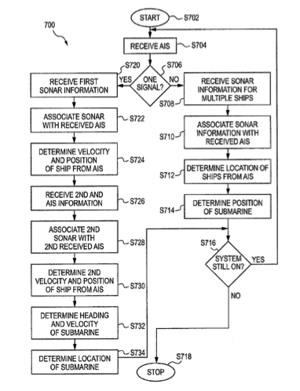
03.07.2011 17:11
NOAA OCRM in your State web map
... Using the latest GIS/web technology, OCRM in Your State lets users click on a state to see current federal funding and state matching funds for coastal programs administered by OCRM. It also has thumbnail descriptions of results from those investments in every state and territory and links to more information about each state's coastal programs. ...I guess this is a Coastal and Marine Spatial Planning (CMSP) targeted web map? A lot of the acronyms on the web page are new to me, so I'm not totally following.
If the web map doesn't load for you, try reloading it a couple times. It hung for me the first two times I tried to view the web map.
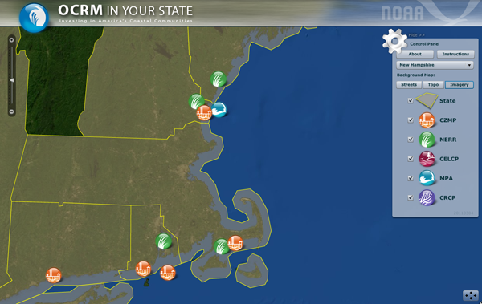
Hey, this is cool... I found a link to UNH in the web map.
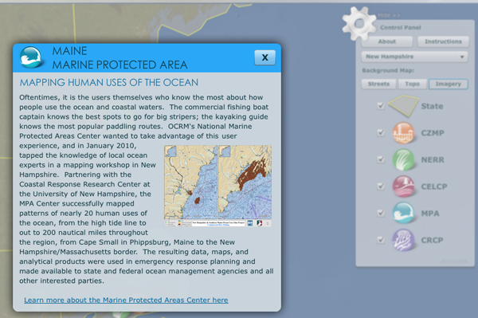
On a note related to government open data, I was listening to FLOSS Weekly 154: Sunlight Labs today while commuting. It is neat to hear about other projects that are trying to make government data more accessible. One of their projects was a contest that one of the groups participating ended up getting hired to create the new Science and Technology page, I found content that I'm interested in... Gulf Spill Restoration Planning. And I can watch just NOAA:
National Oceanic and Atmospheric Administration or use the RSS feed with national-oceanic-and-atmospheric-administration.rss
03.06.2011 18:33
Google Insights for Search
The first query I tried was: Automatic Identification System This begs the question of how people generally refer to something. If there is a general change in the way people refer to a topic, that might strongly influence the search results. For example, if people have been to switching to mostly searching for "AIS" over time, that might explain the decrease.
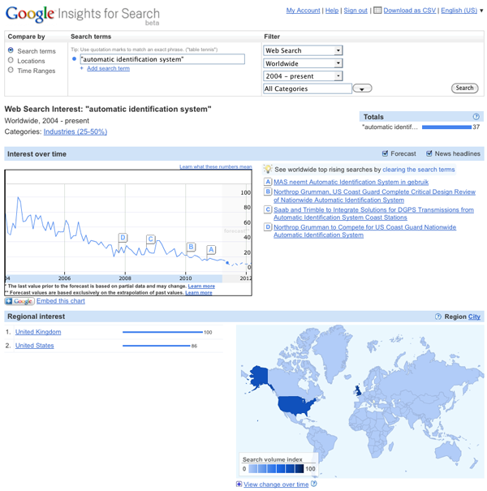
I wanted to see something where I felt like I knew what the response would likely be before I tried it - Deepwater Horizon for the last year is a great example of the onset of a search term and the fall off of interest.
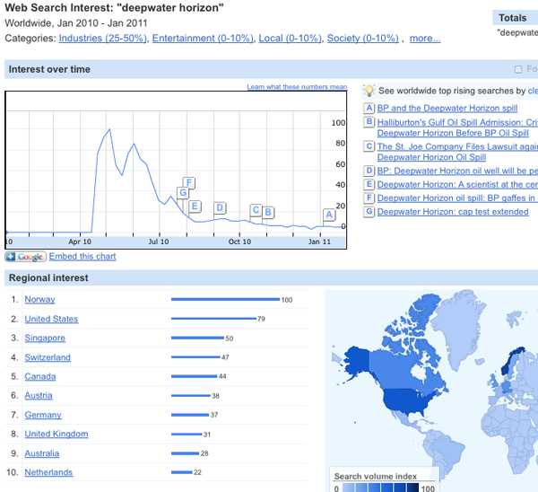
I figured that there would be a spike in searches for the Exxon Valdez that went along with the DWH BP Gulf of Mexico Oil Spill. Sure enough it jumps right out.
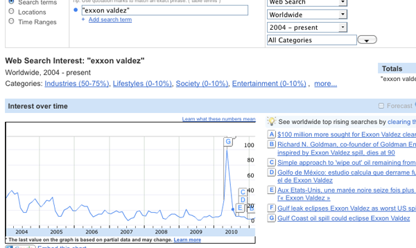
Google also lets you embed the graph:
03.06.2011 14:34
iPad for official FAA charts
The Federal Aviation Administration is moving with the times, it would seem, as it has just granted the first approval for the use of iPads instead of paper charts for informing airline pilots while on duty. There are already a number of EFB (electronic flight bag) devices in use, however the iPad is by far the cheapest and most portable one that's been validated yet. Executive Jet Management, a charter flight operator, went through three months of testing with the iPad ...And TUAW write iPad receives FAA certification as an electronic flight bag that says it's the Jeppesen Mobile TC App. The App is free, BUT:
Note: You must have a valid Jeppesen electronic charting serial number in order to activate new coverages, or update your charts. New Jeppesen subscription serial numbers are activated within an hour of purchase.Image from the Jeppesen App Store entry:
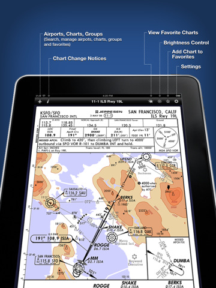
The Jeppesen press release: FAA authorization allows Executive Jet Management to use iPad and Jeppesen Mobile TC App as alternative to paper aeronautical charts
...The authorized EFB configuration is a Class 1 portable, kneeboard EFB solution that is secured and viewable during critical phases of flight as defined in FAA Order 8900.1. Information obtained from this evaluation will also be useful in gaining future authorization for Class 2 mounted configurations utilizing iPad.
Trackback: 2011-Mar-07 Slashgeo: Monday Geonews: OpenCycleMap.org, Lybia and World Unrest Maps, LightSquared GPS Signal Jamming Update, and much more
03.03.2011 12:41
More geophysics videos - marine multichannel seismic surveying
Marco Schinelli has a number of interesting videos, but like most of my videos, there is no sound to go along with the marerial. Here is his video on sequence stratigraphy:
This video is interesting, but the sound level is really low. Be warned that the ray diagram in the video is drastrically simplified.
IRIS has some good animated figures: